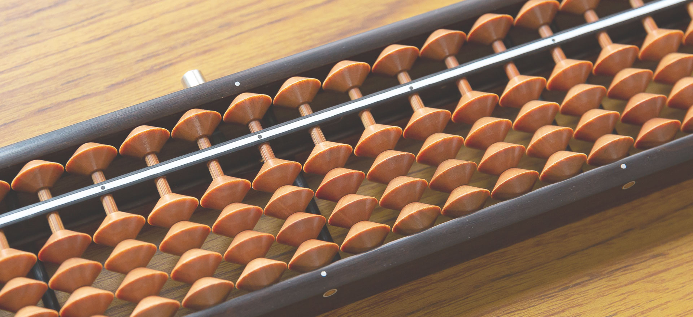
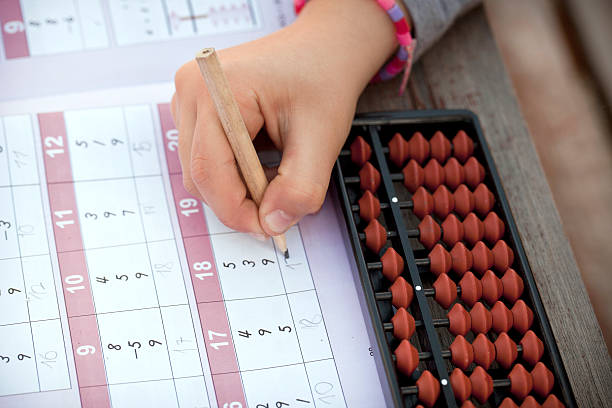

教室そろばん
オンラインそろばん
教室プログラミング
教室紹介
よくある質問
教室そろばん
オンラインそろばん
教室プログラミング
教室紹介
よくある質問

よ
くある
質
問
Faq
教室そろばん
そろばんを習うメリットは？
最大のメリットは、「そろばん式暗算」の習得です。
圧倒的な計算力はもちろん、集中力も高まります。
そろばんは、何歳から始めるのが良いですか？
1 から10 まで「数字を読むこと」ができれば、そろばん練習を始められます。（幼児は、数字を書く練習も並行します。）
当塾では、5 歳以上をお勧めしていますが、4 歳も受け入れています。個人差がありますので、体験レッスンをお気軽にお試しください。
どのコースが良いですか?
お子様専用タブレットで「反復練習」により、効率良く実力アップを図ります。ご家庭で十分復習できるお子様は、週1 回コースを選択されます。
お勧めは、週2 回コースです。確実に、短い間隔で練習を積むことができ、進級スピードが速いお子様が多いためです。
親はそろばん経験がありませんが…
ご家庭の練習は復習ですので、保護者様が指導なさる必要はありません。
また、お子様専用タブレットでは、AI ロボット先生の模範演技を確認でき、YouTube では、塾⾧による指導動画を確認できます。
テキストでなく、デジタル教材で練習するメリットは?
テキストは、モノクロ表示で単調です。また、数字がずらりと並ぶページを見るだけで、負担に感じるお子様が多いです。さらに、採点が終了するまで待ち時間も生じます。
家にあるそろばんを使ってもいいですか？
もちろん、お好きなそろばんを使ってください。必要な方は、一瞬でご破算できる「ワンタッチそろばん」を割引価格でご購入いただけます。
大人の入塾は、可能ですか？
申し訳ありません。当塾は、子どものみを受け入れております。
オンラインそろばん
レッスン中の付き添いは、必要ですか？
タブレットやパソコン操作ができるお子様は、1 人で受講できます。幼児は、付き添いをお願い致します。
プリンターはありませんが、受講できますか？
メールで、プリント教材（PDF）をお送りします。USB にデータを保存して、お近くのコピー機でプリントできましたら、受講いただけます。
ズームの接続設定に自信がありません…
ズームのインストールや設定がご不安な場合は、フォローさせていただきます。お気軽にお知らせください。
パソコンやタブレットのレンタルはありますか。
対面でのみ対応いたします。（レンタル費が別途必要です。郵送はできかねます。）
プログラミング
入塾費や授業料以外に必要な費用は？
ございません。（データ保存用にUSB メモリー1 つをご準備ください。）
ロボットは、購入するのですか？
購入いただく必要はありません。1～2 人で、1 台の教室ロボットを利用します。
家で復習が必要ですか？
復習を挟みながら学習を進めますので、ご家庭では復習の必要はありません。
パソコンに慣れていないので、レッスンについていけるか心配です。
問題ありません。基本的なパソコン操作やタイピングから教えますので、各自のペースに合わせられます。

Copyright ©佐藤そろばん All rights reserved.